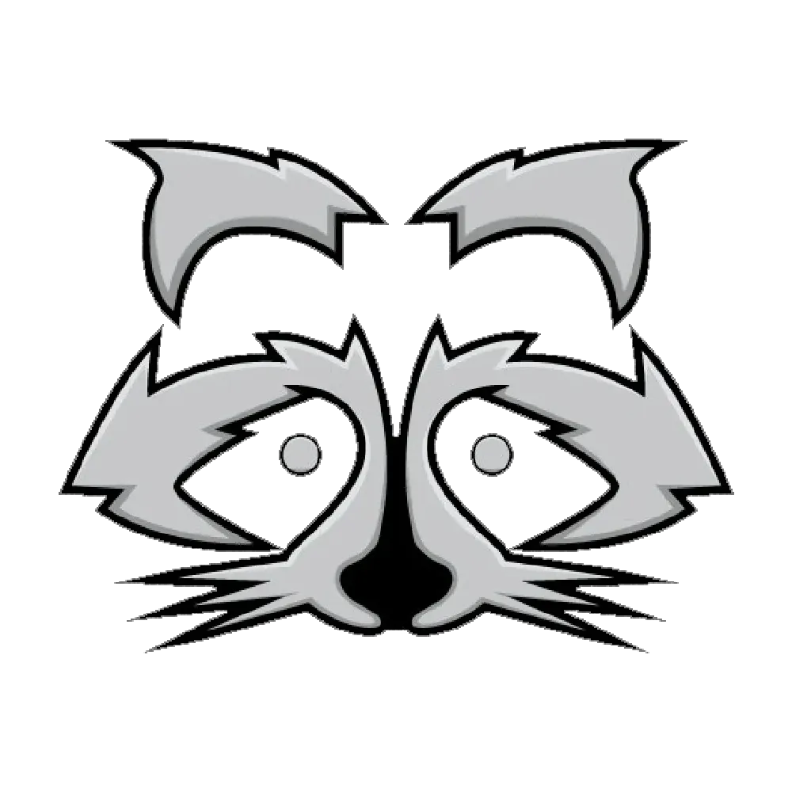
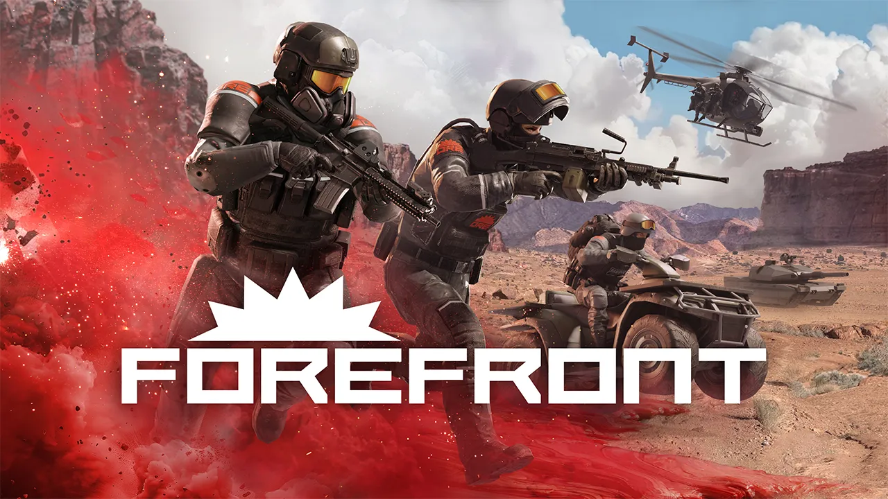
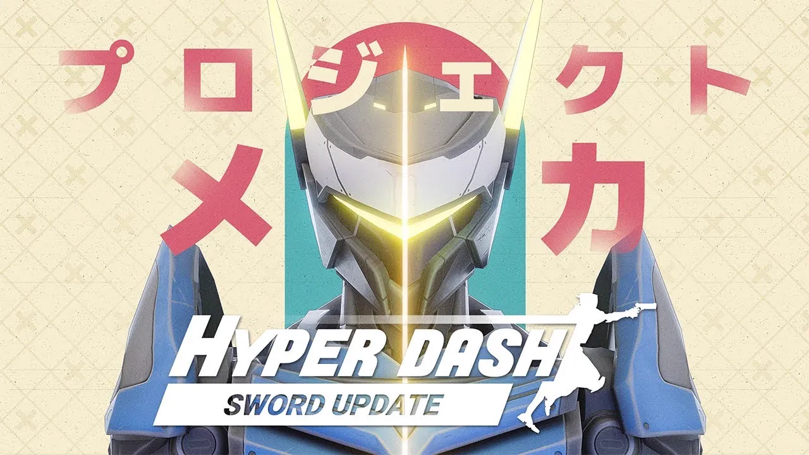
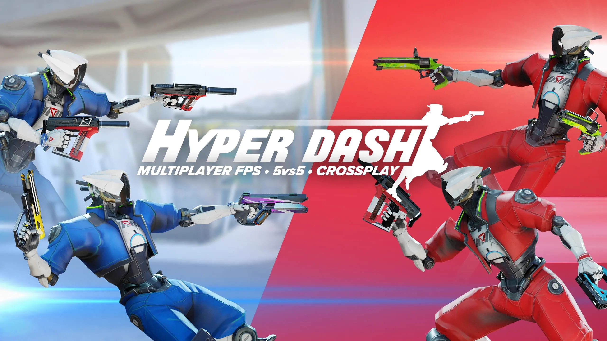

Game Developer
Reï Messely
Wardergrip
About me
Cooperation, teamwork, honesty and transparency is what I value the most in life.
I am interested in anything game development.
Specifically programming, engine tools & game design.
I've often been described as motivated, communicative, a quick learner and helpful.
Besides video games, I love board games, video essays and lore.
Skills
Programming Languages
Game Engines & Tools
Gameplay Programmer
Nov 2025 – Present · Triangle Factory
Working on updates for award winning Forefront

Lead Game Developer
Feb 2025 – Nov 2025 · Triangle Factory
Responsible for delivering updates with a small team.

Graphics & Tools Programmer
Jun 2024 – Feb 2025 · Triangle Factory
Researched and implemented optimizations for Forefront.
Set up and maintained level setup pipeline. Developed engine tools for artists.
Intern Game Developer
Feb 2024 – Jun 2024 · Triangle Factory
Working on updates for Hyper dash.
Bugfixes, QoL, gameplay features and anti-cheat measures.
